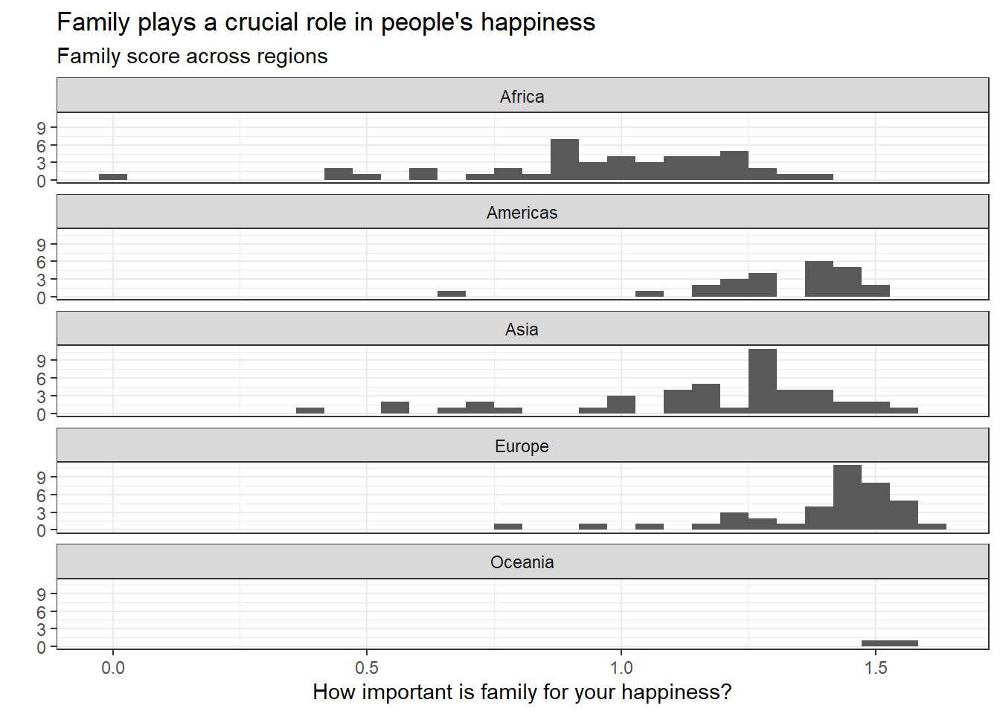
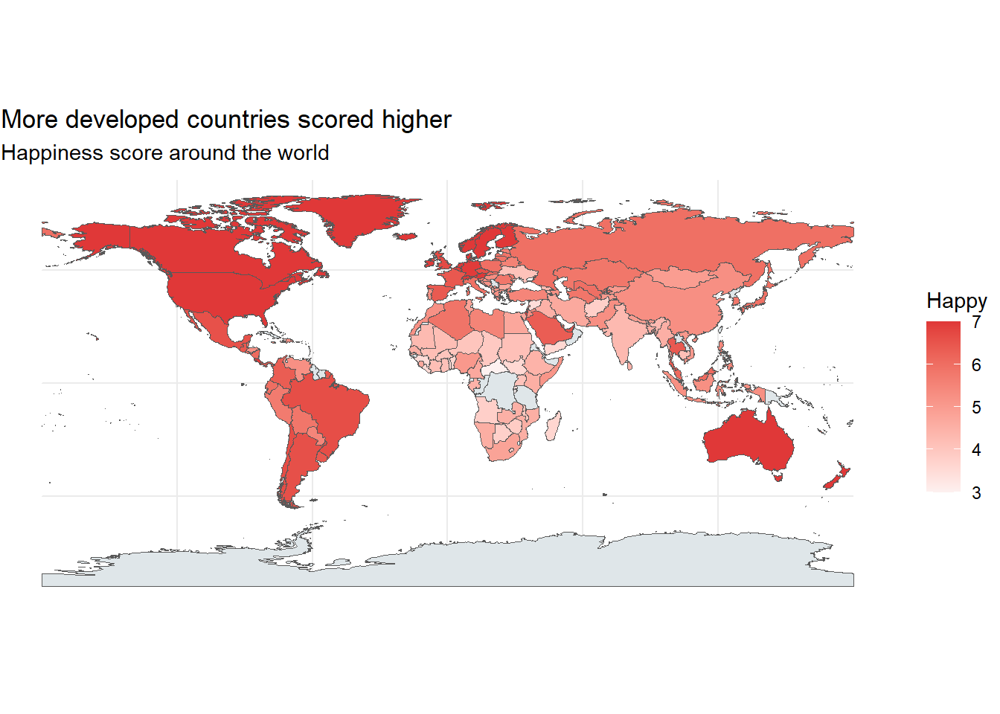

Happiness around the world
I always enjoyed geography and comparing countries on various metrics. The most interesting metric might be happiness which itself depends on many other variables. I used the world happiness dataset from Kaggle to analyse the connection between happiness and various factors around the world.
For more information check out the original dataset: https://www.kaggle.com/unsdsn/world-happiness
Family and happiness
#We create histograms for each continent's happiness based on family score in countries
data %>%
mutate(
continent = countrycode(Country, 'country.name', 'continent')
) %>%
group_by(continent) %>%
summarise(
Family = Family,
mean_fam = mean(Family)
) %>%
na.omit() %>%
ggplot(aes(x=Family)) +
geom_histogram() +
facet_wrap(~continent, scales="fixed", ncol=1) +
theme_bw() +
labs(title="Family plays a crucial role in people's happiness",
subtitle = "Family score across regions") +
ylab("") +
xlab("How important is family for your happiness?")
## Warning: Problem with `mutate()` input `continent`.
## i Some values were not matched unambiguously: Kosovo
##
## i Input `continent` is `countrycode(Country, "country.name", "continent")`.
## Warning in countrycode(Country, "country.name", "continent"): Some values were not matched unambiguously: Kosovo
## `summarise()` regrouping output by 'continent' (override with `.groups` argument)
## `stat_bin()` using `bins = 30`. Pick better value with `binwidth`.

Wealth and happiness
#We create scatterplot with trendline to study relationship
data %>%
ggplot(aes(x=Economy..GDP.per.Capita., y=Happiness.Score)) +
geom_point() +
geom_smooth(method="lm",se=FALSE)+
theme_bw() +
labs(title = "Wealthier contries are happier",
subtitle="Visible trend between happiness and GDP per capita") +
ylab("Happiness score") +
xlab("GDP per capita proxy")
## `geom_smooth()` using formula 'y ~ x'

##How does happiness look like on a map?
#We create world map with countries coloured based on happiness score
world <- ne_countries(scale = "medium", returnclass = "sf")
#rename countries so that they match
world$sovereignt <- gsub("United States of America", "United States", world$sovereignt)
#we merge data and want to keep all countries on map (hence last part of line)
world <- merge(world, data, by.x = "sovereignt", by.y = "Country", all.x = T)
ggplot(data = world) +
geom_sf(aes(fill = Happiness.Score), lwd = 0) +
scale_fill_gradient(low=rgb(253, 241, 240, maxColorValue = 255), high=rgb(224, 56, 56, maxColorValue = 255),
limits = c(3, 7), na.value = rgb(223, 230, 233, maxColorValue = 255), oob=squish) +
theme_minimal() +
labs(fill = "Happy") +
theme(plot.margin = unit(c(.05,.05,.05,.05), "lines")) +
labs(title ="More developed countries scored higher",
subtitle="Happiness score around the world")

Modelling Happiness
Happiness_model<-lm(Happiness.Score~Family +
Health..Life.Expectancy. +
Economy..GDP.per.Capita.+
Freedom+
Generosity+
Trust..Government.Corruption.
,
data=data)
Happiness_model%>%broom::tidy()
## # A tibble: 7 x 5
## term estimate std.error statistic p.value
## <chr> <dbl> <dbl> <dbl> <dbl>
## 1 (Intercept) 1.74 0.187 9.30 1.70e-16
## 2 Family 1.12 0.202 5.53 1.40e- 7
## 3 Health..Life.Expectancy. 1.29 0.322 4.01 9.65e- 5
## 4 Economy..GDP.per.Capita. 0.784 0.205 3.84 1.85e- 4
## 5 Freedom 1.48 0.343 4.31 2.98e- 5
## 6 Generosity 0.381 0.329 1.16 2.50e- 1
## 7 Trust..Government.Corruption. 0.827 0.484 1.71 9.00e- 2
Happiness_model%>%broom::glance()
## # A tibble: 1 x 12
## r.squared adj.r.squared sigma statistic p.value df logLik AIC BIC
## <dbl> <dbl> <dbl> <dbl> <dbl> <dbl> <dbl> <dbl> <dbl>
## 1 0.812 0.805 0.500 107. 3.11e-51 6 -109. 234. 258.
## # ... with 3 more variables: deviance <dbl>, df.residual <int>, nobs <int>
Happiness_model
##
## Call:
## lm(formula = Happiness.Score ~ Family + Health..Life.Expectancy. +
## Economy..GDP.per.Capita. + Freedom + Generosity + Trust..Government.Corruption.,
## data = data)
##
## Coefficients:
## (Intercept) Family
## 1.7430 1.1178
## Health..Life.Expectancy. Economy..GDP.per.Capita.
## 1.2889 0.7844
## Freedom Generosity
## 1.4757 0.3807
## Trust..Government.Corruption.
## 0.8266
We can see that proxies for health, wealth, freedom, generosity and trust in government all positively influence the happiness of a country and altogether explain 80.5% of the variation in happiness.